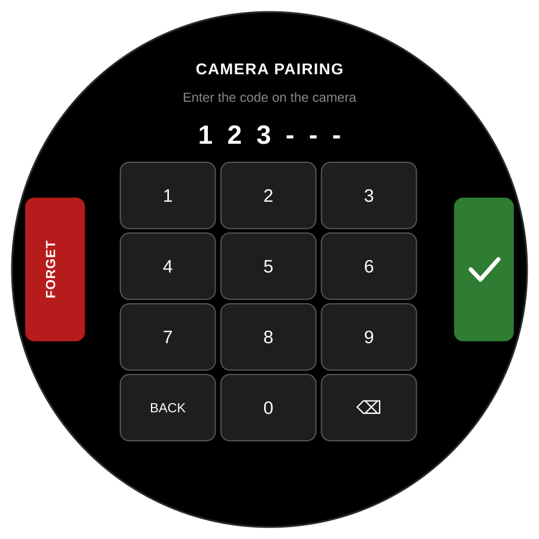
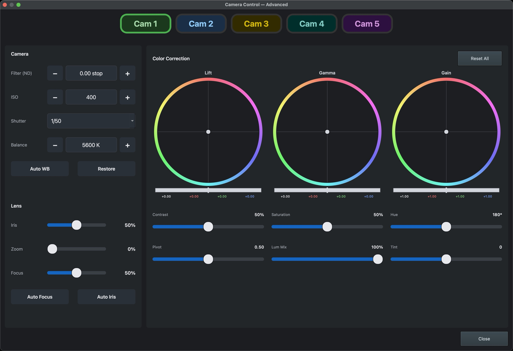

Blackmagic camera control
Pairing a camera to a mount, and driving iris, focus, zoom and colour from the console, the hub screen or a cue stack.
Each mount can hold a Bluetooth bond to the Blackmagic camera sitting on it, and relays control commands to it over that link. It is optional and per-mount: a rig can have one camera paired or five, and a mount with no bond never scans for one.
Because the camera belongs to the mount, there is no "current camera" to select anywhere — every surface addresses cameras by their mount number, the same 1–5 you already use for everything else.
Pairing a camera to a mount
Done on the mount's own round touchscreen, not from the console.
- Put the camera into pairing mode — on a Blackmagic body that's Setup → Bluetooth, and it will show a six-digit code.
- On the mount, touch and hold for about 1.5 seconds to open Setup, then hold again to reach CAMERA PAIRING. It is chained behind Setup deliberately: pairing is a once-per-mount commissioning job for whoever builds the rig, not something an operator needs to find.
- The mount scans, and the line under the title says where it is — Searching for a camera…, then Enter the code on the camera once it has found one. No camera in range means the scan came back empty; check the camera is actually advertising.
- Type the six-digit code on the keypad. Digits fill the dashes left to right, and ⌫ takes one back.
- Press the green tick. It only submits on a full six digits, so a short code does nothing rather than failing. The status turns green and reads PAIRED, or Pairing FAILED — try again, which usually means a mistyped code or a camera that stopped advertising while you typed.

Camera Control — the everyday panel
In the PC app, the ◎ CC button opens Camera Control. It is modeless and stays where you put it: pressing autofocus while watching the shot is the whole point, and a dialog that sat on top of the picture would be working against you.
One row per camera, each with the controls you reach for during a show:
- Auto Focus — one instantaneous autofocus.
- ISO − / + — step the camera's sensitivity.
- Record — start and stop the camera's own recording.
- Advanced… — the full surface, below.
A button flashes to confirm the command was sent and claims nothing more, for the reason in the warning above.
What a row tells you when it cannot help
Four states, spelled out rather than left as a greyed button — they look identical when disabled and each needs a completely different response:
| Row says | What to do |
|---|---|
no camera support |
That mount is running firmware from before camera support. Nothing here works until it is reflashed. |
camera off |
Firmware is current but there is no link — the camera is off, asleep, or out of range. Go and look at the camera. |
no camera paired |
No bond on this mount, so it never reaches for a camera at all. The normal state for a mount without one, not a fault. Pair it on the mount if it should have a camera. |
camera ready |
Paired and linked — the buttons will do something. |
Link state rides on the health record every mount already sends every ten seconds, so a row can be up to that far behind. That is deliberate: a faster path would be plumbing for an update rate nobody can perceive.
Advanced — the full surface
Reached from Advanced…. This is the panel for setting a camera up, not for operating it during a show — the everyday four stay on the ordinary dialog for that.
It is laid out after ATEM Software Control, because that is the reference an operator already knows: camera settings down the left, the three correction wheels across the top right, and the paired sliders beneath them.
One camera at a time, picked with the Cam 1–5 tabs across the top. When something is wrong with that camera's link, a line appears under the tabs saying which of the four states it is in — so if a control does nothing, the panel tells you why before you go looking at the camera. Nothing there means nothing to report.
| Group | Controls |
|---|---|
| Camera | Filter (ND) in stops, ISO, Shutter, and white Balance in kelvin — each stepped with −/+ except Shutter, which is a list. Then Auto WB and Restore. |
| Lens | Iris, Zoom and Focus as sliders, then Auto Focus and Auto Iris. |
| Color Correction | Lift, Gamma and Gain wheels, each over a master bar with its luma, red, green and blue values written out beneath. Then Contrast, Saturation, Hue, Pivot, Lum Mix and Tint, and Reset All for the whole grade. |

There is no Apply button. Commands go out as a control is used. With no acknowledgement and no read-back, an Apply button would offer a confidence the system cannot support.
FOCUS on the hub display
On the per-camera screen of the 7″ hub display, a FOCUS button sits on the CLEAR / SET row, the same size as those two, over the zoom fader below. It fires one instantaneous autofocus on that mount's camera — the same command as Auto Focus in the app, for when nobody is at the console.
From a cue stack or a Stream Deck
Autofocus and zoom are exposed over OSC by the hub, so they can be fired from Bitfocus Companion or QLab without the PC app running at all:
/pts/cam/N/autofocusSee Companion & QLab for the full OSC reference and the port to aim at.
Next: Pairing & identity for how a mount finds its number and its hub, or the PC app for everything else on the console.